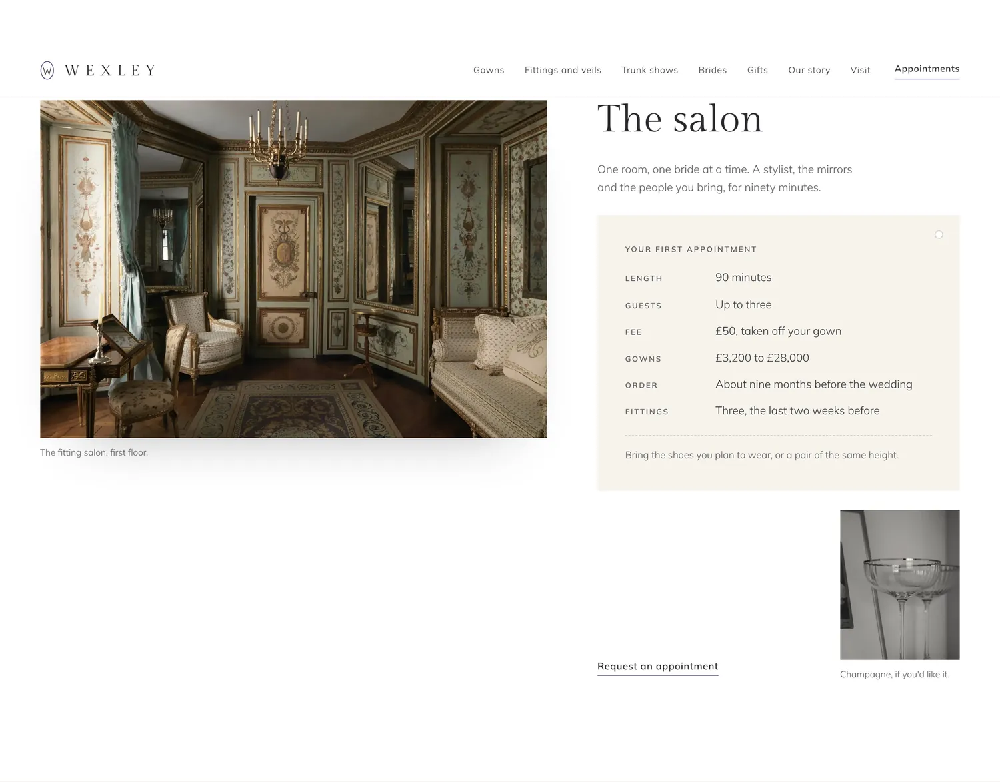
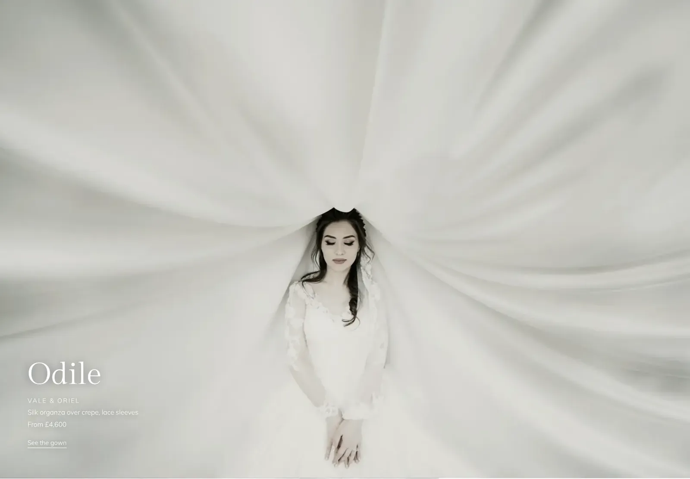
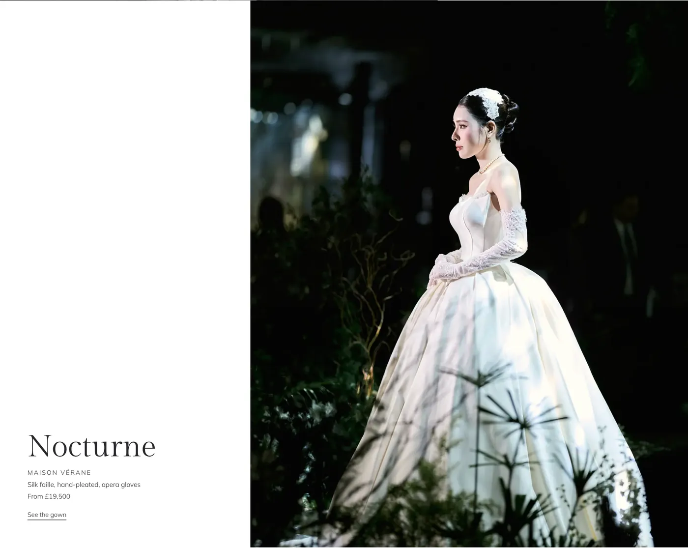
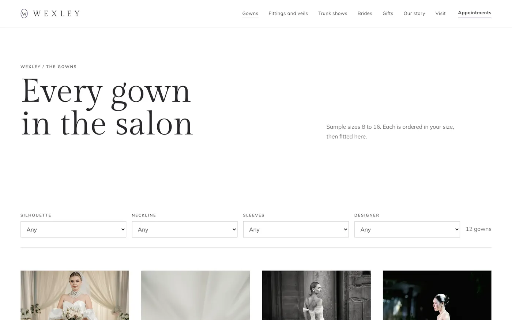
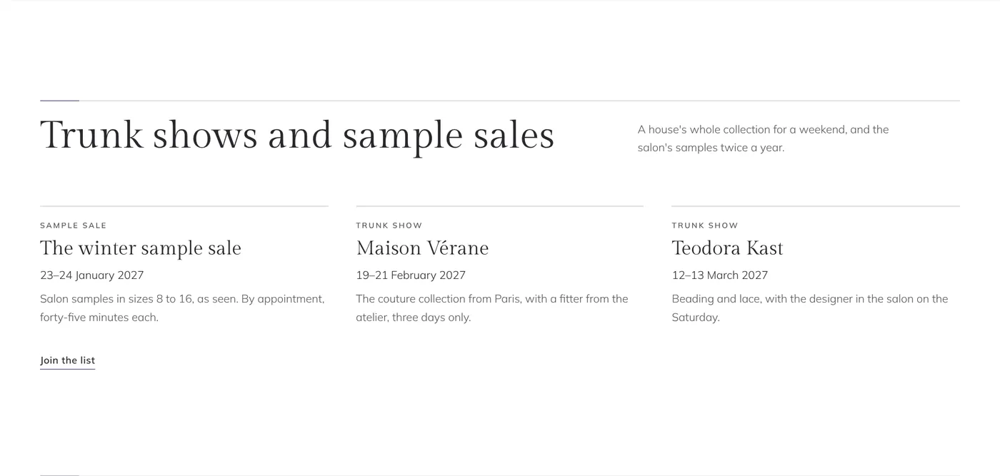
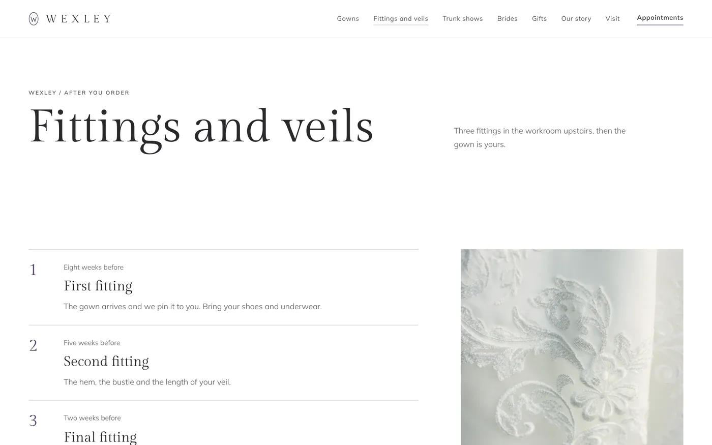
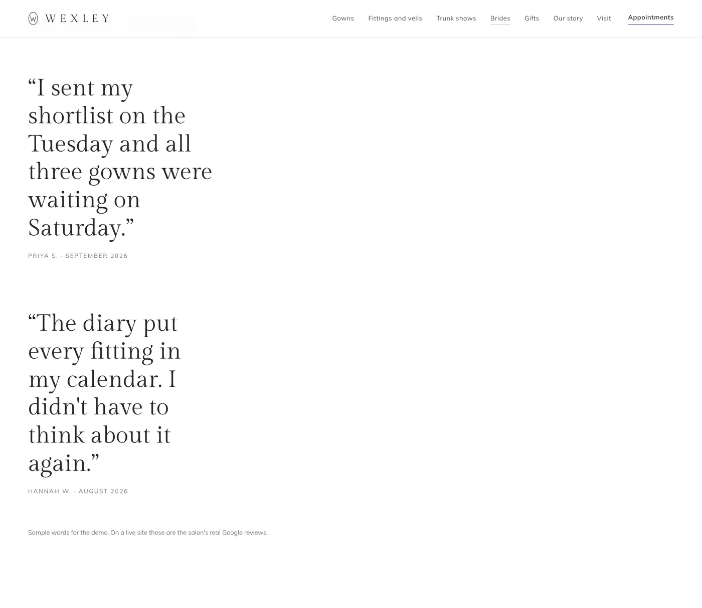
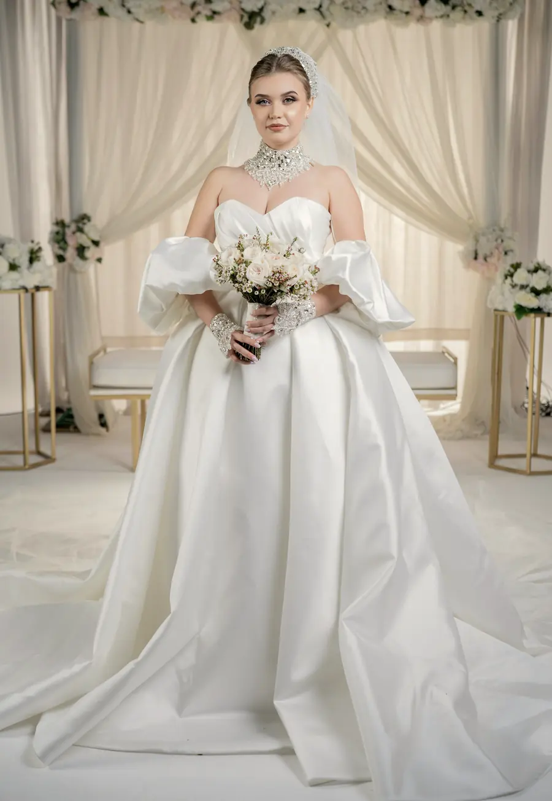
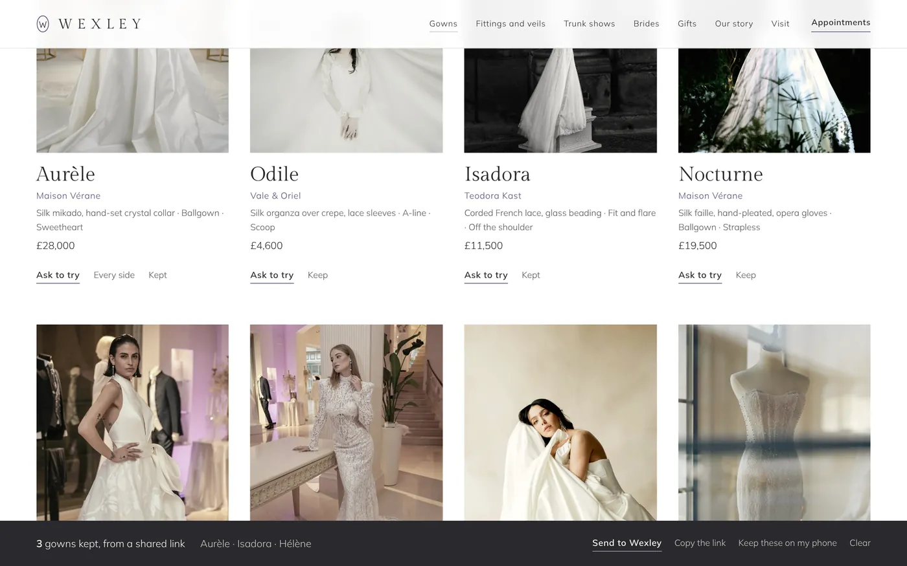

Case study · Bridal salon, Chelsea
The first appointment happens here.
Wexley sells wedding gowns from £3,200 to £28,000, one bride at a time. Before she books, a bride wants to know three things: is this salon at my level, do they have gowns I'd wear, and am I too late. The website answers all three, in that order, before she has said a word.
Wexley, as the salon would write it down.
- Salon
- Wexley, a bridal salon in a Chelsea mews (fictional)
- Gowns
- Twelve, from five houses, £3,200 to £28,000
- Seen
- By appointment, ninety minutes, up to three guests
- Plan shown
- Signature, ten pages
- Home page
- Six sections: the mirror, three gowns, the salon, the diary, trunk shows, find us
- Design
- White and ivory, so white silk reads white; Gilda Display and Mulish; the violet of a dove's neck on one word, Request
The first appointment
The salon, before the salon.
Starter £99 + £25 a month
Every salon starts here: the room, what the first appointment is, and one quiet way to ask for one. No forms on the page itself, and nothing that says "booked". The salon replies with the times it has.
The salon and the first appointment
A photograph of the room, then a card in the salon's own words: how long, how many guests, the fee and whether it comes off the gown, the price range, when to order, what to bring.
One request
"Request an appointment" opens a calm sheet: the wedding date, always day, month, year; who's coming; when suits; the designers to have ready. It arrives as a WhatsApp message, or goes to the salon's booking app if it has one.
The houses
Every designer the salon stocks, what each is known for, and its price band, in the salon's own figures.
Plan your visit
Free on every plan: the walk from the station, the bus, parking with its charges for the hour she arrives, step-free access, the hours, and every question a bride asks.
Brides' words and the salon's Instagram
Real Google reviews, quoted without stars, and the latest posts. On Plus they move to a page of their own and the home page stays quiet.
What the salon receives
Hello Wexley, I'd like to book a first appointment. Wedding: Saturday 18 September 2027 Coming: me and 2 guests Best for me: A Saturday Designers I'd like to see: Maison Vérane, Teodora Kast
The rail is ready before she arrives, because the message already says what she wants to see.

The first fitting
Every gown, seen properly.
Plus £199 + £30 a month
A gown at this price is bought on a photograph before it is ever tried on. On Plus the home page gives two or three gowns a full screen each, like an editorial, and the Gowns page holds the rest.



Twelve gowns, found four ways.
By silhouette, neckline, sleeve and designer. It only offers choices the salon's gowns have, so the rail is never empty by accident. "Ask to try" sends that one gown on WhatsApp. A designer's link opens the page already filtered.

The weekends brides plan around.
Each with its dates. A show takes itself down when it ends, so a bride never travels for one that's over. "Join the list" opens the salon's own Google Form.

What happens after the order.
Each fitting, when it falls and what it's for; what alterations include and what they cost; every veil length with its price. The questions brides ask after paying a deposit, answered before they ask.

Their words, set like a quote in a magazine.
Real Google reviews with name and month, no stars, on a page of their own with the salon's latest photographs. Gift vouchers get their own page too: towards a veil, a fitting or the gown.
Also on Plus
Up to five pages, the team, the salon's story, and a photograph band from the workroom. Any of them can also be added to Starter on its own.
The final fitting
Made to her measurements.
Signature £349 + £35 a month
Three things only Signature does. Each one works from what the bride tells it, and none of it stores anything about her anywhere.
One date in. The whole year out.
She enters her wedding date and the diary works back by the salon's own timings: the last day to order first, then the gown arriving, each fitting and collection. One tap puts every date in her calendar; another sends them to the salon. Try it.
Order your gown by Saturday 12 December 2026.
Saturday 18 September 2027
That day has passed. On Wexley this note is in the salon's own words: some gowns can be made sooner.
- 40 weeks beforeOrder your gown
- 16 weeks beforeChoose your veil
- 10 weeks beforeYour gown arrives
- 8 weeks beforeFirst fitting
- 5 weeks beforeSecond fitting
- 2 weeks beforeFinal fitting
- 1 week beforeCollect your gown
- The dayYour wedding

FrontEvery side, as in the fitting room.
The home page opens on it, and on the Gowns page "Every side" opens any gown the same way: the front in the middle, the salon's other photographs angled in either side, each named. It is how she will see the gown on the day she tries it.

For her, and for her mother.
"Keep" on any gown builds a shortlist. She sends it to the salon so the gowns are on the rail when she arrives, and copies a link that opens the same list on her mother's phone. The list travels in the link itself; a shared list never replaces the one on the phone that opens it.
Measured
Light as silk organza.
A gown photographed this well has to arrive quickly on a phone. These are Wexley's own figures, measured on the finished site.
- Speed on a phone (Lighthouse, three runs)
- 97 · 97 · 97
- Accessibility
- 100
- First words on screen
- 1.5–1.6 s
- The mirror, fully drawn
- 2.2–2.3 s
- Page held up by scripts
- 120–130 ms
- Movement while loading
- 0
- Scripts, styles, fonts
- 12.9 · 12.6 · 58.7 KB
- Photographs on the first screen
- 133 KB
Lighthouse mobile on the home page, three runs from a fresh server, the first one cold. Script and style sizes are compressed. The three full-screen gowns and the salon load as she scrolls.
Collected
Three fittings. Choose where to stop.
Every plan is on a 12-month minimum, then a month's notice. Any single feature can be added to a smaller plan.
Starter
£99 + £25 a month
- The home page and Plan your visit
- The salon, the appointment card and one request
- The houses with their price bands
- Brides' words and the salon's Instagram
Plus
£199 + £30 a month
- Up to five pages
- Gowns full screen on the home page, and the Gowns page with its finder
- Trunk shows and sample sales; fittings and veils
- Brides, gift vouchers, the team
Signature
£349 + £35 a month
- Up to 20 pages
- The gown diary
- The mirror for every gown
- The shortlist, and one thing made only for your salon
Your appointment
Your gowns, seen properly.
Send us your Instagram and we'll make a free mockup of your home page, with your own photographs and your own gowns.
hello@sitefloor.com